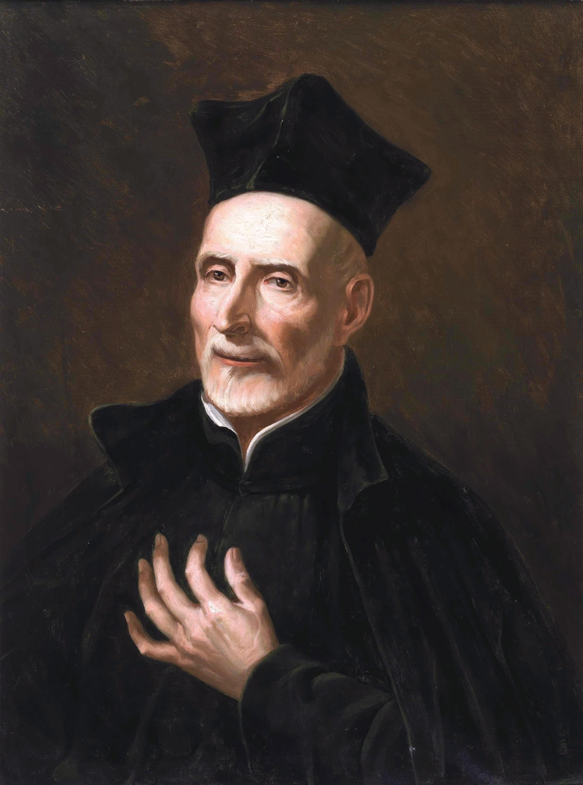

Vida y obra educativa
Recorre su infancia, su formación, la escuela de Santa Dorotea, la creación de las Escuelas Pías, el lema “Piedad y Letras”, su cronología y las dificultades que atravesó.
Leer Vida y obraRostros de la Santidad Escolapia
Educar para transformar
Sacerdote, educador, fundador y santo
San José de Calasanz defendió que la educación debía estar al alcance de todos, especialmente de los niños con menos oportunidades. Su obra continúa viva más de cuatro siglos después.
Conocer su historia
Presentación
San José de Calasanz fue un sacerdote, educador y santo español que dedicó gran parte de su vida a la educación cristiana de los niños y jóvenes, especialmente de aquellos que vivían en condiciones de pobreza. Es reconocido como fundador de las Escuelas Pías y como uno de los principales impulsores de la educación popular y gratuita en Europa.
Dentro de la Iglesia católica, su condición es la de sacerdote, religioso, fundador y santo. Dentro de la historia de las Escuelas Pías, es la figura principal, ya que inició su obra educativa y fundó la orden religiosa de los Padres Escolapios.
Datos principales
| Nombre completo | José de Calasanz y Gastón |
|---|---|
| Nacimiento | 1557, Peralta de la Sal, Aragón, España |
| Fallecimiento | 25 de agosto de 1648, Roma |
| Condición eclesial | Sacerdote, religioso, fundador y santo |
| Obra principal | Escuelas Pías y Orden de los Padres Escolapios |
| Lema educativo | Piedad y Letras |
| Reconocimiento | Patrono de las escuelas populares cristianas desde 1948 |
Recorrer el proyecto
Para facilitar la lectura, la investigación fue distribuida en tres páginas secundarias. Cada una reúne contenidos relacionados con una etapa diferente de la vida y la misión de San José de Calasanz.
Recorre su infancia, su formación, la escuela de Santa Dorotea, la creación de las Escuelas Pías, el lema “Piedad y Letras”, su cronología y las dificultades que atravesó.
Leer Vida y obraDescubre los valores que convirtió en acciones, su compromiso con los niños más pobres y la continuidad actual de la misión educativa escolapia.
Leer Testimonio y legadoAccede al video, al mapa de Santa Dorotea, a los materiales digitales de las Escuelas Pías y a la bibliografía consultada para realizar la investigación.
Ver Recursos y fuentesReflexión final
San José de Calasanz no fundó solamente una institución educativa. Su mayor aporte fue reconocer que todos los niños, especialmente los más pobres, tenían derecho a recibir una educación completa y de calidad.
Su vida demuestra que la educación puede convertirse en una forma concreta de servicio, inclusión y transformación. Por ese motivo, su pensamiento y su obra continúan siendo relevantes más de cuatro siglos después.